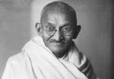

A Freedom FighterGo to resources

A photograph of Mahatma Gandhi
Biography
Mahatma Gandhi (born October 2, 1869, Porbandar, India—died January 30, 1948, Delhi) Indian lawyer, politician, social activist, and writer who became the leader of the nationalist movement against the British rule of India. As such, he came to be considered the father of his country.
Achievements
1869 - Born In Porbandar (also known as Sudamapuri)
1883 - the 13-year-old Mohandas was married to 14-year-old Kasturbai Makhanji Kapadia
in an arranged marriage,
1885 - Gandhi's father Karamchand died.
Gandhi, then 16 years old, and his wife of age 17 had their first baby, who survived only a few days.
The two deaths anguished Gandhi.
1887 - the 18-year-old Gandhi graduated from high school in Ahmedabad.
1888 - he enrolled at Samaldas College in Bhavnagar State, then the sole
degree-granting institution of higher education in the region.
But he dropped out and returned to his family in Porbandar.
1888 - Gandhi aged 18, left Porbandar for Mumbai, then known as Bombay.
Upon arrival, he stayed with the local Modh Bania community whose elders warned him that England would
tempt him to compromise his religion, and eat and drink in Western ways.
Despite Gandhi informing them of his promise to his mother and her blessings, he was excommunicated from
his caste.
Gandhi ignored this, and on 4 September, he sailed from Bombay to London, with his brother seeing him
off.
Gandhi attended University College, London, a constituent college of the University of London.
1893 - Gandhi aged 23, set sail for South Africa to be the lawyer for Abdullah's
cousin. He spent 21 years in South Africa, where he developed his political views, ethics and politics.
1906 - when the British declared war against the Zulu Kingdom in Natal, Gandhi at age
36, sympathised with the Zulus and encouraged the Indian volunteers to help as an ambulance unit.
1910 - Gandhi established, with the help of his friend Hermann Kallenbach, an
idealistic community they named Tolstoy Farm near Johannesburg. There he nurtured his policy of peaceful
resistance.